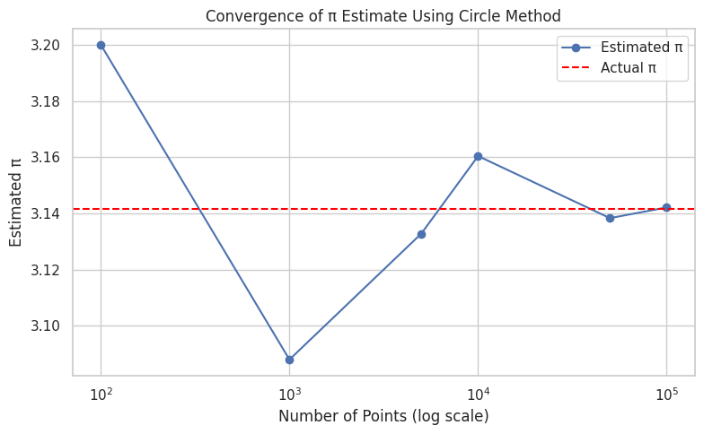

Problem 2
🧮 Estimating π Using Monte Carlo Methods
🯠Motivation
Monte Carlo simulations are a class of numerical techniques that rely on random sampling to approximate mathematical and physical results. One of the most famous and intuitive applications of Monte Carlo methods is estimating the value of \(\pi\) — a fundamental constant in mathematics — using geometric probability.
This task links key concepts from: - Probability and randomness - Geometry - Numerical approximation methods
By simulating large numbers of random experiments and observing how outcomes statistically align with geometric properties, students gain insights into: - The power of Monte Carlo methods - The connection between randomness and precision - Practical computation of abstract mathematical constants like \(\pi\)
These methods are widely used in areas such as finance, physics, engineering, and AI modeling.
🔵 Part 1: Estimating π Using a Circle
📘 1. Theoretical Foundation
Imagine a unit square \([0,1] \times [0,1]\) that contains a quarter circle of radius 1 in the corner.
We randomly generate points \((x, y)\) within the square. Some of them fall inside the quarter circle, defined by the inequality:
The area of the full unit circle is \(\pi r^2 = \pi\), and the square's area is 4 (if the circle is inscribed in a square with sides of length 2).
By comparing the ratio of points inside the circle to the total number of random points, we can estimate \(\pi\):
As the number of points increases, the estimate becomes more accurate due to the Law of Large Numbers and Central Limit Theorem.
🧪 2. Simulation
We simulate the process using Python:
- Generate \(n\) random points in the square.
- Check whether each point lies inside the circle.
- Compute the ratio of points inside vs. total points.
- Multiply the ratio by 4 to estimate \(\pi\).

📊 3. Visualization
We can visualize the simulation by plotting the generated points:
- 🔵 Blue: points inside the circle
- 🔴 Red: points outside the circle

Example Output for 10,000 points:
🖼️ (Insert output image after running the code in Google Colab)
📈 4. Analysis
We study how increasing the number of points affects the accuracy of the estimate:
- Try with increasing values: 100, 1,000, 10,000, 100,000
- Plot the convergence of estimates compared to the real value of \(\pi\)

📌 Observation: - The estimate becomes more stable and accurate as \(n\) increases. - The graph converges toward the true value of \(\pi \approx 3.14159\). - Randomness causes fluctuation, especially with small samples.
Part 2
Sure, here’s a complete and structured explanation for Buffon’s Needle simulation, following the same format as the previous Monte Carlo π estimation task:
🯠Estimating π Using Buffon’s Needle Method
🧠Theoretical Foundation
Buffon’s Needle is one of the oldest known problems in geometric probability. It provides a probabilistic method to estimate π through a physical or simulated experiment.
📌 Setup:
- We have parallel lines on a plane, spaced a fixed distance apart (e.g., 2 units).
- A needle of a certain length (e.g., 1 unit) is dropped randomly onto the plane.
- We measure whether the needle crosses any of the lines.
📠Derivation of Formula:
Let:
- \( L \): length of the needle
- \( d \): distance between the lines
- \( N \): number of needles dropped
- \( C \): number of needles that cross a line
If \( L \leq d \), then the probability that a needle crosses a line is:
Solving for π:
This formula becomes more accurate as N increases.
🧪 Simulation
We simulate the dropping of many needles by randomly generating: - The center position of the needle (between lines) - The angle at which it falls
The condition for crossing a line is:
If true, the needle crosses one of the parallel lines.
🛠Key Steps:
- Generate random center \( x \) between 0 and \( d/2 \)
- Generate random angle \( \theta \in [0, \frac{\pi}{2}] \)
- Count how many needles satisfy the crossing condition
- Use the π estimation formula
📊 Visualization
To visualize the simulation: - Each needle is drawn as a line segment at its given angle and center. - Green needles cross a line. - Red needles do not cross. - Dashed horizontal lines represent the parallel lines.
This helps to intuitively observe which needles contribute to estimating π.

📈 Analysis
To explore accuracy and convergence:
- We vary the number of needle drops (e.g., 100, 1000, 5000, 10,000).
- At each step, we compute the estimated π.
- Then we compare it to the actual value of π to analyze the absolute error:
 [
\(\text{Error} = \left| \pi_{\text{true}} - \pi_{\text{estimated}} \right|
\]\)
[
\(\text{Error} = \left| \pi_{\text{true}} - \pi_{\text{estimated}} \right|
\]\)
🔠Key Observations:
- More drops → more accurate estimate, but with slower convergence.
- Compared to the circle method, Buffon’s Needle converges more slowly and shows more variance in small samples.
- The method is mathematically elegant, but less practical for fast/precise π estimation.
Let me know if you'd like the code for the convergence analysis of Buffon's Needle too (with graphs like in the previous task)!